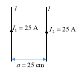
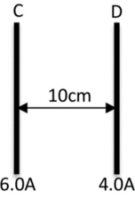
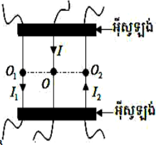

លំហាត់ជ្រើសរើសសំខាន់ៗ ត្រៀមប្រឡងសញ្ញាបត្រមធ្យមសិក្សាទុតិយភូមិ


ខ្សែចម្លងវែងពីរស្របគ្នានៅចម្ងាយ \( 10\text{ cm}\) ពីគ្នា ហើយឆ្លងកាត់ដោយចរន្ត \( 6\text{ A}\) និង \( 4\text{ A}\)។ ជ្រាបម៉ាញេទិចនៃខ្យល់ ឬសុញ្ញាកាស \(\mu_0 = 4\pi \times 10^{-7}\text{ T}\cdot\text{m/A}\)។ គណនាវ៉ិចទ័រកម្លាំងដែលមានអំពើលើខ្សែចម្លង \(D\) ប្រវែង \( 1\text{ m}\) (ដូចរូប) ប្រសិនបើ៖
ខ្សែចម្លងពីរមានប្រវែងស្មើគ្នា \(l_1 = l_2\) នៅនឹងស្របគ្នា ហើយស្ថិតនៅចម្ងាយ \( 0.6\text{ m}\) ឆ្លងកាត់ដោយចរន្តដែលមានទិសដៅដូចរូប ( \(I_1 = 6\text{ A}\) , \(I_2 = 9\text{ A}\) )។